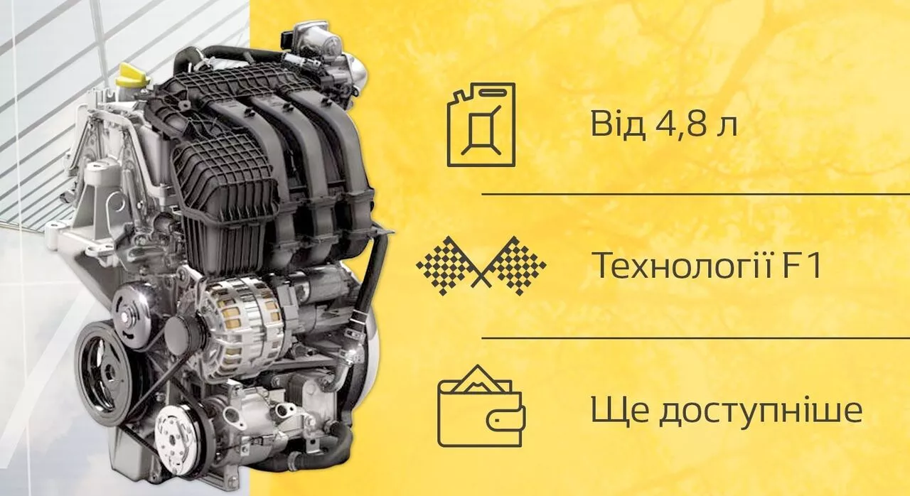

RENAULT LOGAN
СЕДАН, ЩО ВИРІШУЄ ЩОДЕННІ ЗАДАЧІ
Logan— це автомобіль від грн 422 100для практичних людей, які приймають раціональні та виважені рішення.Logan— це гармонія компактності ззовні та просторості — всередині!
Габарити
Renault Logan – автомобіль, який добре почувається на міських та заміських дорогах.
П’ятимісний седан має довжину 4346 міліметрів, на задніх сидіннях комфортно розташовуються три пасажири, а багажник на 510 літрів дозволить взяти з собою все необхідне.
Двигуни
У вас є можливість обрати для себе Logan з дизельним, бензиновим атмосферним чи турбо-двигуном, а також установленим ГБО.
Всі вони мають п’ятиступінчасту механічну коробку передач, яку так полюбляють досвідчені та професійні водії.
- Life+
- бензин
- дизель
- Zen
- бензин
Версії